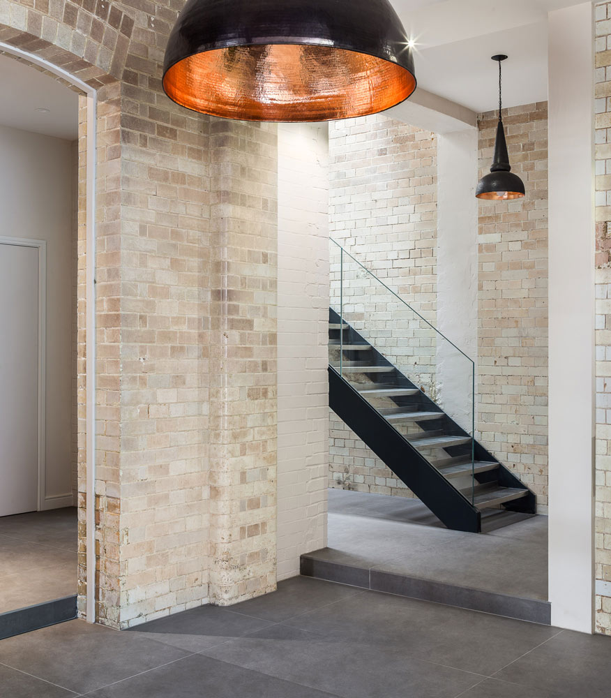
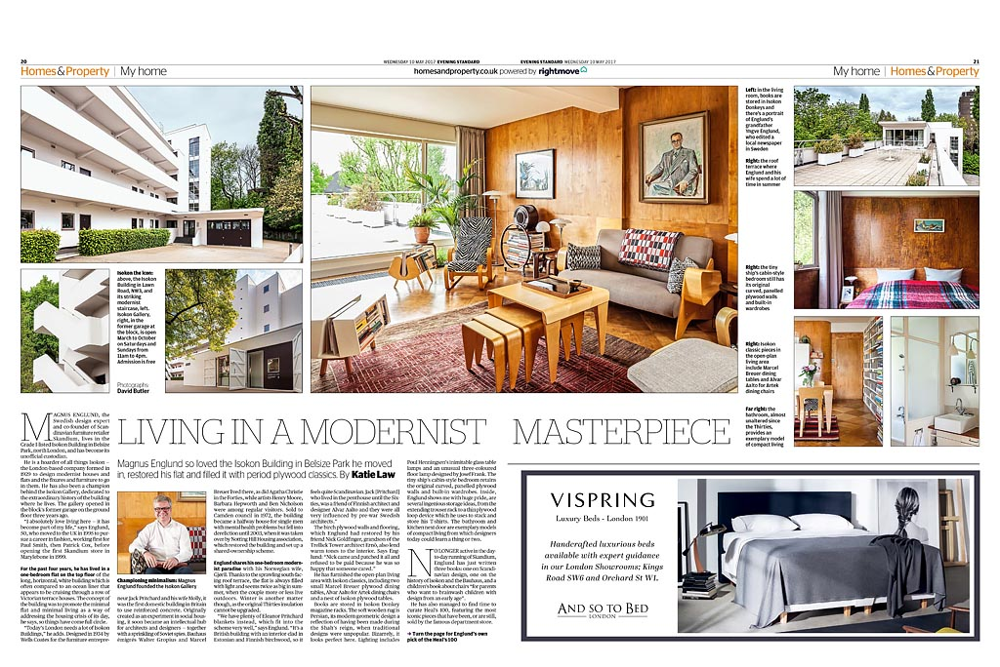
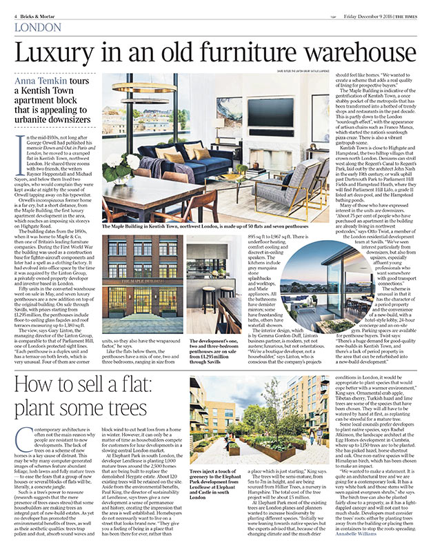
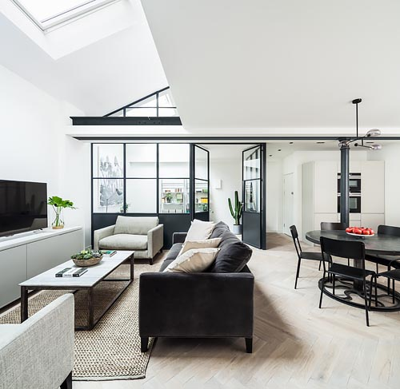
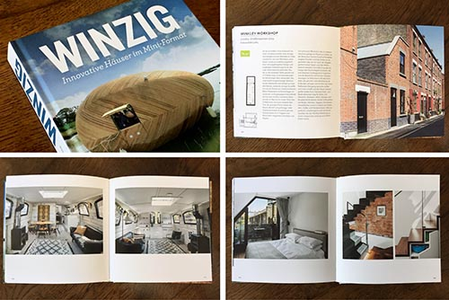
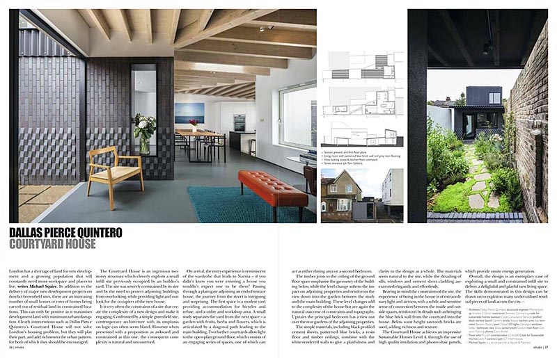

News
Catch up on the latest
Well that's a Houzz hatrick!
Jan 2017
Best of Houzz Awards 3 years running.
2018 - Photography and Customer Service
2017 - Customer Service
2016 - Photography
Thank You!
Mole's Stackyard House graces the cover of Passive House+ Magazine
JUN 2017
Its entirely plausible that past issues of the magazine were used in the insulation of this Suffolk jewel.

Bakery Place shortlisted for the New London Awards 2017 Conservation & Retrofit
08 JUN 2017
New London Architecture reveals 160 strong shortlist for the New London Awards, and invites Londoners to vote for their ‘People’s Choice’

Skandium Co-Founder Magnus Englund at home in the Isokon Building
10 May 2017
ES Homes & Property drops in on Magnus Englund who is curating the Heals 100 Collection.
ES Homes & Property
1 Feb 2017
Henri Bredenkamp of Studio 30 Architects creates a stunning, bright and airy double height extension, emphasised by the slot staircase.
Marsh Hill by Mole Architects
Jan 2017
The razor-sharp wedged beauty that is Mole's Marsh Hill House has a fantastic feature in the latest Blueprint Magazine. Click arrows for more.
2017 starts with a win!
Jan 2017
2017 has got off to a cracking start, I've got my fantastic clients to thank for my Best of Houzz Service Award 2017 to add to my Best of Houzz Photography 2016 badge.
Bakery Place in amongst the awards again
Oct 2016
Bakery Place is Highly Commended at the Sunday Times British Home Awards.

The Maple Building gets a little love
09 Dec 2016
The Times takes a peek inside the old furniture warehouse that is adding a little glitz to North London.
KM PAGES LANE GETS SHORTLISTED
Nov 2016
Kirkwood Mccarthy's classy Pages Lane projects gets shortlisted for the Don't Move, Improve! 2017 awards.

Bakery Place AJ Retrofit awards
22 Sept 2016
Jo Cowen Architects wins the AJ Retrofit Award for Housing with the Bakery Place development.
Bonham's Magazine
Sept 2016
The wonderfully lavish home of Bespoke Furniture Designer Tim Gosling is featured in Bonhams Magazine.
QUALITY OF PLACE AWARDS
Oct 2016
Mole Architects have won the Design category of Suffolk Coastal District Council’s ‘Quality of Place’ awards for their recently completed house in Aldeburgh, Suffolk, Marsh Hill. The house was up against some stiff competition in the category, with the awards celebrating the best in innovative design, conservation and landscaping.
READ MORE

Winzig!!!!!!
Aug 2016
It means 'Tiny' in German, which is what the projects in this book by Sandra Leitte are all about. Berts Barge and Winkley Workshop fit right in. Hopefully an english version will be out soon.
Moore Park Road
Sept 2016
Homes & Interiors Scotland has a beautiful spread on this lovely home shot for Jo Cowen Architects.

INHABIT FEATURES THE COURTYARD HOUSE.
Oct 2015
The fabulously textured Courtyard House gets some great press in the Autumn edition of Inhabit.
MAXLIGHT FLEET GETS NEW LIVERY
Sept 2016
A slight depart from the norm, Maxlight asked me to photograph their fleet in all its vinyl wrapped glory.
A Brazilian Spread
Feb 2016
Brazil's Living Magazine goes large on Jo Cowen's Campana Road project. Click image for slideshow.